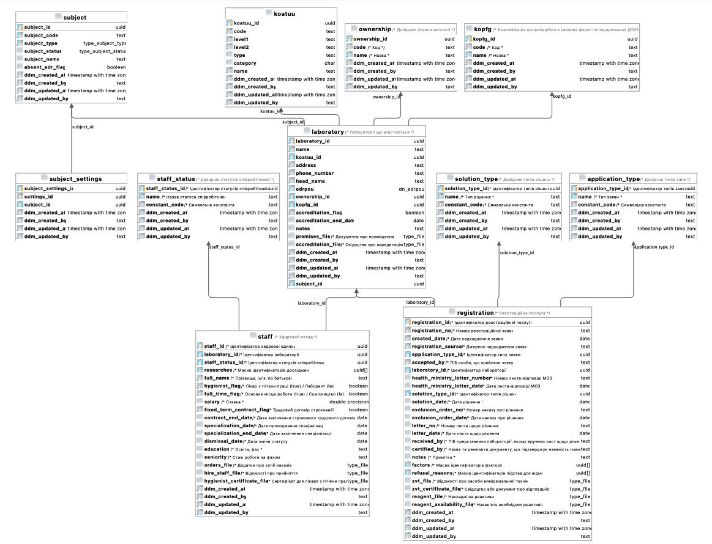

Performance testing
1. Introduction
1.1. Purpose
The objective of conducting performance testing is to assess and validate the performance, reliability, and scalability of a Platform under different workload scenarios. This testing identifies bottlenecks and issues that must be addressed to enhance the user experience. It ensures that the Platform and registries can manage the anticipated volume of users or transactions, including business process execution, data retrieval on dashboards, and CRUD operations with various internal or external services or registries.
1.2. Objectives
The main objectives of performance testing are:
- Ensuring the Platform and its registries meet workload requirements
-
It helps to verify whether the application meets defined performance criteria, such as the number of users interacting with the system, response times, throughput, and resource utilization under normal and peak workload conditions.
- Identifying performance bottlenecks
-
It enables the detection and analysis of potential bottlenecks in the Platform, which can negatively affect overall system performance. These could include inefficient code, improper configurations, or hardware limitations.
- Evaluating scalability
-
It assesses the Platform’s and registries' ability to gracefully handle an increasing number of users or workload without significantly degrading response times and system stability. This approach helps to determine if the system can support future growth in terms of user base and data volume.
- Ensuring stability and reliability
-
It validates the Platform’s and registries' ability to maintain consistent performance under a continuous, heavy load for an extended duration.
- Providing recommendations for performance improvement
-
It helps determine potential enhancements in the architecture, code, configurations, and hardware, leading to better and more efficient use of the resources.
- Enhancing user experience
-
Well-performing registries and admin tools on the Platform with quick response times and minimal downtime contribute to a positive user experience.
1.3. Scope of performance testing
The scope of performance testing includes all registry components of the Platform.
2. Performance tactics
Performance tactics are techniques and strategies used to optimize the performance of the Platform services. These tactics address the various aspects of a system’s performance, including response times, throughput, resource utilization, scalability, and stability. Below, you can find the list of tactics used to optimize the Platform’s performance.
2.1. Controlling resource demand
- Load balancing
-
Distributing services evenly across multiple nodes reduces response times, prevents overloading, and ensures optimal resource utilization.
- Caching
-
Storing frequently-used data or precomputed results in memory reduces future requests' latency. Caching reduces a load and improves response times for repeated requests.
- Code optimization
-
We are implementing efficient algorithms and data structures, removing redundant or unnecessary code, minimizing the use of heavy resources in the Platform’s code, and using internal routes for cross-service interaction.
2.2. Managing resources
Scaling the infrastructure services vertically by adding more resources to a single service (e.g., CPU, memory) or horizontally by adding more pods can improve the system’s capacity to handle increased workload and user traffic.
2.3. Monitoring
Continuous (each release) monitoring Platform and registries performance to identify and eliminate performance bottlenecks and proactively address potential issues before they become critical in the design, grooming, and implementation phases.
3. Performance testing approach
Automated testing approach is used for performance testing of the Platform’s services. It involves using tools, scripts, and processes to execute, monitor, and analyze performance tests automatically. Implementing an automated strategy in performance testing offers several benefits, such as increased efficiency, accuracy, repeatability, and reduced human effort. Critical aspects of implementing an automated approach are as follows:
-
test scenario design;
-
test data definition and generation;
-
tool selection;
-
test execution (per release) on a separate environment;
-
monitoring and analytics;
-
reporting.
3.1. Performance testing scenarios
E2E user flows on the API level of one of the developed registry regulations (see detailed description of the regulation in the Test data section), and separate GET/POST operations to the database had been taken as a basis for registry performance scenarios.
Conditions and type of launch should be defined for each scenario before the execution.
Conditions: execution time (e.g., 1 hour), number of users (e.g., 1500), number of registries (e.g., 5)
| The number of users may vary and depends on the baseline metrics stated in the requirements for the type of registry. |
Type of launch: Load (expected load), Stress (increased load)
Below, you can find the list of scenarios.
3.1.1. GET (Read) operations to the database
The current scenario is focused on studying the performance of the isolated Platform database components and provides an opportunity to ensure that the component can withstand the expected loads. The test executes the following steps: logging into the Portal and obtaining a list of regions and districts from the database, as this request operates with the largest data array and number of references.
3.1.2. POST (Write) operations through the business process level and database
The current scenario is focused on studying the performance of the registry Platform components in integration, ensuring that the main functional components of the Platform can withstand the expected loads.
The test performs the following steps:
-
Logging into the Portal
-
Retrieving information from the Portal dashboard
-
Creating a new chemical factor in a database
3.1.3. E2E scenario based on integration and user interaction through the Officer and Citizen portals
The current scenario is focused on studying the performance of the Platform as a whole. It simulates the main user scenarios and their interactions: creating a laboratory, changing its data, adding staff, etc. These scenarios are adjusted according to the prevalence weight among users and the corresponding delays for typical operations. This scenario runs against 1 and 5 registries as separate tests.
E2E scenario steps visualization is described below:
3.2. Types of performance testing
There are several types of performance tests, each focusing on different aspects of the Platform’s performance behavior:
3.2.1. Load testing
Checks the application’s ability to perform under an expected user load. The goal is to identify and analyze the system’s behavior, such as response times, throughput, and resource utilization, when multiple users access the application simultaneously and identify performance bottlenecks—usually used in all scenarios described in the previous chapter.
3.2.2. Stress testing
Evaluates the system’s performance and stability under extreme or heavy user interactions. It identifies the breaking point of the Platform and registries and helps uncover unexpected issues. Usually used in login, read/write operations to a database.
3.2.3. Endurance testing
Assesses the Platform’s and registries' reliability and robustness by subjecting it to a continuous load over an extended period. This type of testing helps identify issues like memory leaks, resource depletion, and gradual performance degradation—usually used in all scenarios for 8 hours.
3.2.4. Scalability testing
Measures the Platform’s and registries' ability to scale up or down in response to changes in load, user traffic, or resource requirements. This approach includes vertical scaling (adding more resources to a service that produced a bottleneck) and horizontal scaling (running tests against multiple registries).
3.2.5. Resilience testing
Evaluates the Platforms and registries' ability to maintain functionality and performance when faced with adverse conditions, such as system failures, hardware degradation, or network disruptions. The goal is to ensure the system can recover gracefully and continue to provide an acceptable user experience under such circumstances.
3.3. Test data
3.3.1. Registry regulation structure
Data (business processes and forms, data model with an initial load) of one of the developed registry regulations (certified laboratories registry regulation) is used as a basis for all performance tests.
- Data model
-
The data model (Download) is built based on a genuine Excel-like register for the Ministry of Labor. CRUD endpoints for adding, reading, updating, and deleting values are developed for each directory and table. Filling out forms with data received from a database is provided in Search conditions.
Figure 3. Physical data model - Business processes
-
Business processes and the data model are consistent with each other. Data validation rules on business process forms and in the data model do not contradict.
List of business processes used in performance tests:
-
Create laboratory (Download)
-
Update laboratory (Download)
-
Create new personnel (Download)
-
Create a chemical dictionary (Download)
-
Create an application for initial entry (Download)
-
Create an application for the expansion of factors (Download)
-
Create an application to remove the Laboratory from the list (Download)
-
3.3.2. Test users
Test users are generated in the Keycloak service with the appropriate attributes and roles before each test execution.
3.4. Test tools
Load tests are written using the JMeter tool (industry standard) and the Carrier accelerator (https://public.getcarrier.io/), which directly runs the tests, accumulates the results of their execution in real-time on the corresponding Dashboard (reports), and provides tools for their analysis.
3.5. Test environment
An Openshift cluster in AWS has been used for systematic performance testing. A separate registry (perf-test) is created, and all necessary stubs (mocks) of integration modules to external systems are configured there. Testing is carried out in isolation from external systems and does not operate with external data sources.
3.6. Monitoring and analytics
For successful analysis of peaks and bursts of loads, the following monitoring and logging tools are used:
-
Kibana/ElasticSearch — for searching and analyzing the Platform and registry logs;
-
Grafana/Prometheus at the centralized services level — for monitoring performance metrics of central components;
-
Grafana/Prometheus at the registry services level — for monitoring performance metrics of registry components;
-
Jaeger (Kiali) — for monitoring "requests/response" tracing.
3.7. Reporting
The dedicated team leader prepares the reports after each iteration of performance script execution and publishes them to the Platform’s documentation.
The performance reports contain:
-
Metrics and statistics taken from Carrier, Grafana, and Jaeger tools: general scenario characteristics, main execution chart, number of requests per time unit chart, table of parameters by each request, resources usage (CPU, RAM, network usage), table of CPU usage per service, table of RAM usage per service, table of network usage per service;
-
List of issues (with request name, URL, response code, and error message) during test execution.
-
General conclusion about the performance of the registry and its services.
4. Performance testing schedule
Performance testing is conducted in each release. If some issues are detected, appropriate action items are formed by the dedicated team lead and implemented within the release activities. Once all necessary changes are implemented and tested, we conduct a new round of performance testing to confirm the absence of performance-related issues.